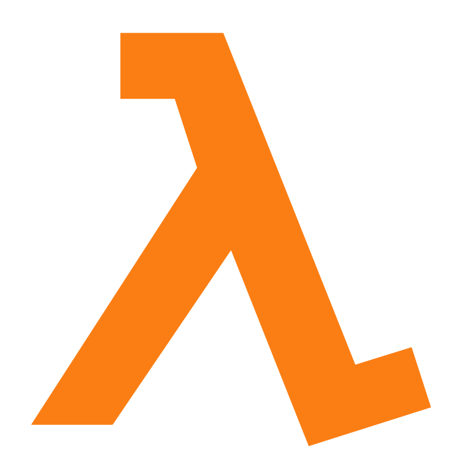
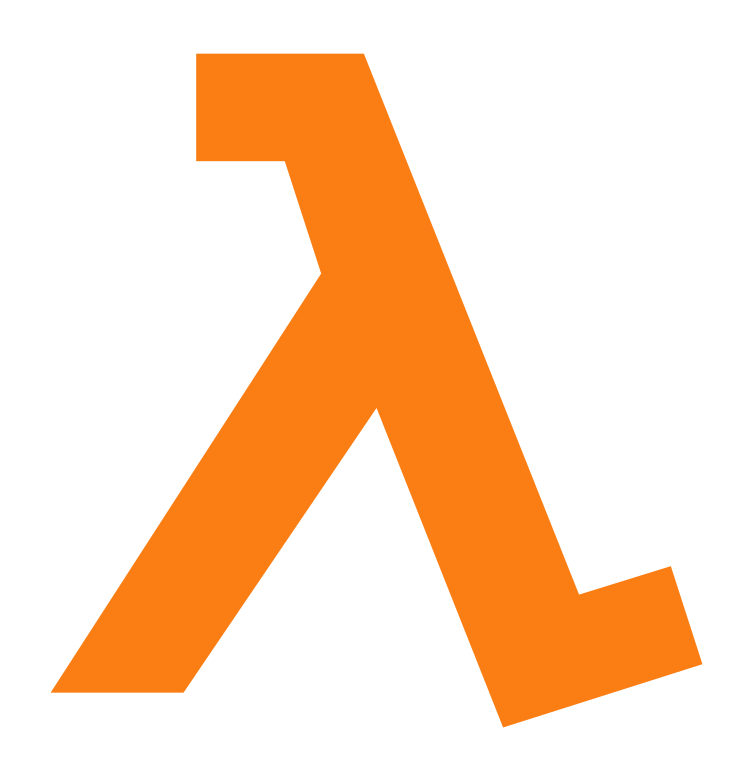

Functional Kotlin
 +

+

About Me
John Burns
Staff Engineer @ GrubHub
CKUG Co-Organizer
ktlint-gradle Maintainer
@wakingrufus
 wakingrufus
wakingrufus
 @wakingrufus@bigshoulders.city
@wakingrufus@bigshoulders.city
- Unlimited PTO
- 8-16 weeks of parental leave
- 4.5 day work week
About You
Experienced with OOP Java
Experienced with Functional Programming
Experienced with Kotlin
Experienced with FP + Kotlin
What is Functional Programming?
What is Functional Programming?
Similar Principles as OOP
- Encapsulation
- DRY
- GoF Design Patterns
- Favor composition over inheritance
What is Functional Programming?
Differences from OOP
- Verbs vs Nouns
- Limit mutable state
What is Functional Programming?
What is a functional language?
- Java and Kotlin are multi-paradigm
- real world projects are rarely pure OOP or FP
What is Functional Programming?
Functional Core, Imperative Shell
- Shell: OOP, state, IO, Side effects, GUI
- Core: Pure functions, stateless, logic
What Makes Kotlin more "Functional"?
- Kotlin gives us more tools for FP
What Makes Kotlin more "Functional"?
- Pure Functions
- Immutable Data
- "First-class" Functions
- Functional Types
- Higher Order Functions
- Type System
Immutable Data
- Thread safe
- Avoids temporal coupling
- No need for defensive copies
- Helps prevent side effects
- Easier to cache
Immutable Data
data class ImmutableDataValue(val stringData: String)
Pure Functions
- Deterministic: Same inputs will always yield same outputs
- No Side-Effects: Do not access or mutate shared state
Pure Functions
Non-Deterministic
data class ChatMessage(
val user: String
val timestamp: Instant
val message: String)
fun newMessage(message: String) : ChatMessage {
return ChatMessage(
user = System.getProperty("user.name"),
timestamp = Instant.now(),
message = message)
}
Pure Functions
Deterministic
data class ChatMessage(
val user: String
val timestamp: Instant
val message: String)
fun newMessage(
message: String,
user: String,
timestamp: Instant) : ChatMessage {
return ChatMessage(
user = user,
timestamp = timestamp,
message = message)
}
Pure Functions
Side Effects
fun addNewMessageSideEffect(
messages: MutableList<ChatMessage>,
newMessage: ChatMessage) {
messages.add(newMessage)
// Modifies input
}
val externalMessages: List<ChatMessage> = ArrayList()
fun addNewMessageSideEffect2(newMessage: ChatMessage) {
externalMessages.add(newMessage)
// Modifies something outside of scope
}
Pure Functions
No Side Effects
fun addNewMessage(
messages: List<ChatMessage>,
newMessage: ChatMessage) : List<ChatMessage> {
return listOf(*messages.toTypedArray(), newMessage)
}
First-Class Functions
class BigDecimalUtil {
private BigDecimalUtil() { }
static boolean bigDecimalEquals(BigDecimal one, BigDecimal two) {
return one.compareTo(two) == 0;
}
}
fun bigDecimalEquals(one: BigDecimal, two: BigDecimal) : Boolean {
return one.compareTo(two) == 0
}
fun bigDecimalEquals(one: BigDecimal, two: BigDecimal) : Boolean
= one.compareTo(two) == 0
val bigDecimalEquals: (Int, Int) -> Boolean
= { one, two -> one.compareTo(two) == 0 }
Functional Types
- @FunctionalInterface
- Automatically match SAM params
- Allow you to declare functional params
Functional Types
static <T> boolean contains(
Collection<T> collection,
Predicate<T> predicate) {
for(T i: collection){
if(predicate.test(i)){
return true;
}
}
return false;
}
contains(
Arrays.asList("1", "2", "10"),
(test) -> test.length() > 1
); // true
@FunctionalInterface
public interface Predicate<T> {
boolean test(T var1);
}
Functional Types
fun <T> boolean contains(
collection: Collection<T>,
predicate: (T) -> Boolean) {
for(T i: collection){
if(predicate(i)){
return true;
}
}
return false;
}
contains(Arrays.asList("1", "2", "10")) {
it.length() > 1
} // true
Higher-Order Functions
- Take a function as an input
- Return a function as output
Higher-Order Functions
fun <T> twice(f: (T)->T) : (T)->T = { t -> f(f(t))}
fun addThree(x: Int) = x + 3
val addThreeTwice : (T) -> T = twice(::addThree)
addThreeTwice(7) // 13
Higher-Order Functions
Common Examples
- Kotlin Scope Functions (let, apply, etc)
- Collection Operations (map, filter, etc)
- Memoize
- Lazy delegate
Types
- Nullability
- Sealed Classes
- Pattern Matching
Types
Nullability
var s : String?
s = null // OK
var s : String
s = null // Compile Error
Types
Sealed Classes
sealed class Thing {
class Thing1(val thing1: String): Thing()
class Thing2(val thing2: Int) : Thing()
}
Types
Pattern Matching
val thing: Thing
when(thing){
is Thing1 -> thing.thing1 // String
is Thing2 -> thing.thing2 // Int
}
Monads
- Higher-order function as an object
- Composable
Monads
Optional
final var opt = Optional.ofNullable(...);
opt.isPresent(); // true or false
opt.or(fallback);
opt.map(String::length).orElse(0);
val opt: String? = ...
opt != null
opt ?: fallback
opt?.length ?: 0
Monads
Either
sealed class Either<A, B> {
class Left<A, B>(val value: A) : Either<A, B>()
class Right<A, B>(val value: B) : Either<A, B>()
}
val e : Either<String, Int>
when(e){
is Left -> e.length > 2
is Right -> e > 2
}
Monads
Try
sealed class Try<A> {
class Success<A>(val value: A) : Try<A>()
class Failure<A>(val ex: Exception) : Try<A>()
}
fun <A> doTry(work: () -> A): Try<A> {
return try {
Try.Success(work())
} catch (e: Exception) {
Try.Failure(e)
}
}
val result = doTry { "" }
when (result) {
is Try.Failure -> result.ex
is Try.Success -> result.value
}
Types
Other
- Java's CompletableFuture
- ArrowKt's IO
- Collections
Railway-Oriented Programming

Credit: Scott Wlaschin
Railway-Oriented Programming
Monad Chains
fun <A, B> Try<A>.andThen(next: (A) -> B): Try<B> {
return when (this) {
is Try.Success -> doTry { next(this.value) }
is Try.Failure -> Try.Failure<B>(this.exception)
}
}
val result = doTry { "" }
.andThen { it.length }
.andThen { it + 2 }
.andThen { it < 0 }
when (result) {
is Try.Failure -> result.exception
is Try.Success -> result.value
}
Railway-Oriented Programming
Monad Chains
fun myFunct1(s: String) : Try<Int> = doTry { it.length }
fun <A, B> Try<A>.flatMap(next: (A) -> Try<B>): Try<B> {
return when (this) {
is Try.Success -> next(this.value)
is Try.Failure -> Try.Failure<B>(this.exception)
}
}
val result = doTry { "" }
.flatMap { myFunc1(it) }
when (result) {
is Try.Failure -> result.exception
is Try.Success -> result.value
}
Testing
Testing
class FizzBuzzRunner( val linePrinter: PrintStream = System.out) {
fun fizzBuzz(limit: Int) {
for(i in 1..limit) {
linePrinter.println(calculateValueForNumber(i))
}
}
fun calculateValueForNumber(number: Int) : String {
val sb = StringBuilder()
if (number % 3 == 0) { sb.append("FIZZ") }
if (number % 5 == 0) { sb.append("BUZZ") }
if (sb.isEmpty()) { sb.append(number) }
return sb.toString()
}
}
Testing
fun fizzBuzz(limit: Int) {
for(i in 1..limit) {
print(calculateValueForNumber(i))
}
}
fun calculateValueForNumber(number: Int) : String {
val sb = StringBuilder()
if (number % 3 == 0) { sb.append("FIZZ") }
if (number % 5 == 0) { sb.append("BUZZ") }
if (sb.isEmpty()) { sb.append(number) }
return sb.toString()
}
fun print(string: String) {
System.out.println(string)
}
Testing
fun fizzBuzz(
limit: Int,
printer: (String) -> Unit = ::print
) {
for(i in 1..limit) {
printer.invoke(calculateValueForNumber(i))
}
}
fizzBuzz(4)
fun test() {
val outputList = mutableListOf<String>()
fizzBuzz(6) { outputList.add(it) }
assertThat(outputList[2]).isEqualTo("FIZZ")
}
More Resources
- Using Ad-hoc Polymorphism to Test Functional Kotlin - Me
- Static Web Development with Kotlin DSLs - Me
- Railway oriented programming - Scott Wlaschin
- Objects Should Be Immutable - Yegor Bugayenko
- The Value of Values - Rich Hickey
- Functional Core, Imperative Shell - Kasper B. Graversen
- Coping with Kotlin's Scope Functions - Simon Wirtz
@wakingrufus
 wakingrufus
wakingrufus
 @wakingrufus@bigshoulders.city
@wakingrufus@bigshoulders.city